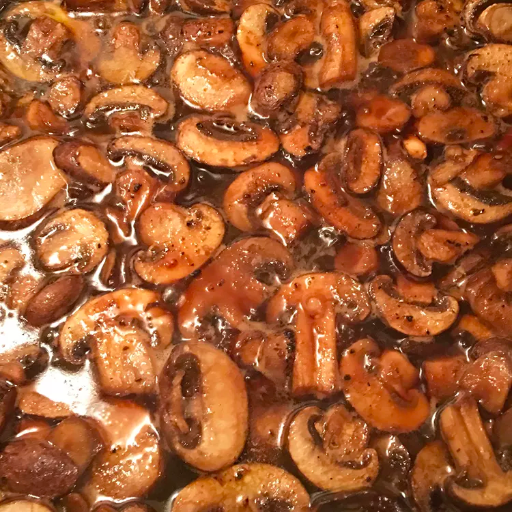

Mushrooms Recipe

Description
These mushrooms are the quintessential topping for all types of steak. Also excellent on baked potatoes.
I have people calling me and asking me for the recipe even years after I have made them for them. They are that good!
Ingredients
3 tablespoons olive oil
3 tablespoons butter
1 pound button mushrooms, sliced
1 tablespoon red cooking wine
1 tablespoon teriyaki sauce, or more to taste
1 clove garlic, thinly sliced
¼ teaspoon garlic salt, or to taste
freshly ground black pepper to taste
Directions
- Heat olive oil and butter in a large saucepan over medium heat. Add mushrooms, wine, teriyaki sauce, sliced garlic,
garlic salt, and black pepper; cook and stir until mushrooms are lightly browned, about 5 minutes.
- Reduce heat to low and simmer until mushrooms are tender, 5 to 8 more minutes.